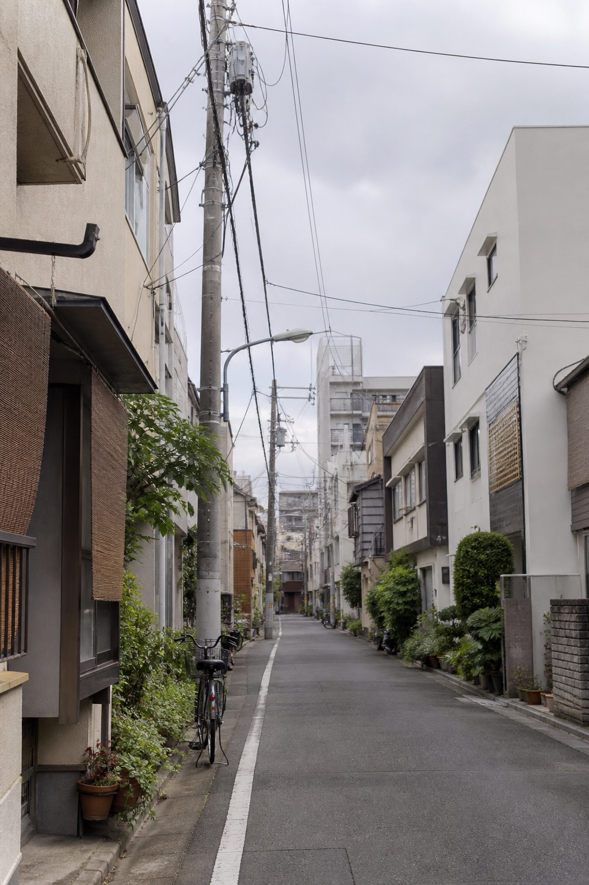

웹캠 영상을 OpenCV로 받고 얼굴·연령 모델에 넘긴 뒤, 분석 결과에 맞는 광고를 화면에 띄웠습니다. 입력이 들어오고, AI가 처리하고, 결과가 바로 보이는 구조였습니다. 지금 돌아보면 번역기와 꽤 닮아 있었습니다.
Webカメラ映像をOpenCVで受け取り、顔・年齢モデルへ渡した後、分析結果に合う広告を画面へ表示しました。入力をAIが処理し、結果がすぐ見える構成です。振り返ると、今回の翻訳機とよく似ていました。
JAPAN INTERNSHIP · TOKYO · 2026
호텔 프런트와 콜센터에서 쓸 실시간 번역기를 만들었습니다. 고객의 말을 일본어로 옮기는 일부터 채팅 서버 연결, 실제 서버 배포까지. 로컬에서 잘 돌아가는 코드와 현장에서 버틸 수 있는 프로그램은 다르다는 걸 8주 내내 배웠습니다.
ホテルフロントやコールセンターで使うリアルタイム翻訳機を開発しました。顧客の声を日本語へ訳すところから、チャットサーバーとの連携、実環境への配備まで。ローカルで動くコードと、現場で使い続けられるプログラムは別物だと8週間を通して学びました。
PROFILE / プロフィール
전남대학교 컴퓨터정보통신공학과 4학년 정의준입니다. 도쿄 사무실에서는 호텔 프런트와 콜센터에서 쓸 로컬 실시간 번역기를 가장 오래 붙잡고 있었습니다. 채팅 서버를 연결하고, 배포 환경을 만드는 일도 맡았습니다.
全南大学コンピュータ情報通信工学科4年のチョン・ウィジュンです。東京オフィスでは、ホテルフロントやコールセンターで使うローカルリアルタイム翻訳機に最も長く取り組みました。チャットサーバーの連携と配備環境の構築も担当しました。
RELATED EXPERIENCE / TECH STACK
인턴십 전에도 웹캠, AI 모델, 웹 화면을 이어 붙이는 프로젝트를 해봤습니다. 덕분에 출발부터 낯설지는 않았습니다. 이번에는 입력이 음성으로 바뀌었고, 결과가 호텔 업무와 서버 환경까지 이어졌습니다.
インターン前にも、Webカメラ、AIモデル、Web画面をつなぐプロジェクトに取り組みました。だから最初から全てが初めてだったわけではありません。今回は入力が音声に変わり、その先がホテル業務とサーバー環境まで広がりました。
웹캠 영상을 OpenCV로 받고 얼굴·연령 모델에 넘긴 뒤, 분석 결과에 맞는 광고를 화면에 띄웠습니다. 입력이 들어오고, AI가 처리하고, 결과가 바로 보이는 구조였습니다. 지금 돌아보면 번역기와 꽤 닮아 있었습니다.
Webカメラ映像をOpenCVで受け取り、顔・年齢モデルへ渡した後、分析結果に合う広告を画面へ表示しました。入力をAIが処理し、結果がすぐ見える構成です。振り返ると、今回の翻訳機とよく似ていました。
ISMCTS와 휴리스틱, 학습 평가함수를 섞어 100ms 안에 답을 내도록 줄이고 또 줄였습니다. 정확해도 늦으면 쓸 수 없었습니다. 로컬 AI를 만들 때 속도를 같이 봐야 한다는 걸 이때 먼저 익혔습니다.
ISMCTS、ヒューリスティック、学習評価関数を組み合わせ、100ms以内に答えを出せるよう何度も削りました。正確でも遅ければ使えません。ローカルAIでは速度も同時に見る必要があると、この時に知りました。
React와 Vite로 GitHub 탐색 서비스 화면을 만들고, 쿠키를 이용한 활동 기록과 로딩 UI를 붙였습니다. 서버에서 온 데이터가 사용자가 보는 화면까지 어떻게 이어지는지 직접 다뤄봤습니다.
ReactとViteでGitHub探索サービスの画面を作り、Cookieを使った利用記録とローディングUIを加えました。サーバーから来たデータが利用者の画面へどう届くかを、自分で触りながら確かめました。
WORK / 企業実習
가장 오래 붙잡은 건 호텔용 로컬 실시간 번역기였습니다. 인식이 빠른지, 번역이 자연스러운지, 직원이 바로 읽을 수 있는지 하나씩 고쳤습니다. 틈틈이 채팅 서버도 붙이고, VPS에서 실제로 돌아가도록 배포까지 맡았습니다.
最も長く取り組んだのは、ホテル向けのローカルリアルタイム翻訳機です。認識は速いか、訳文は自然か、スタッフがすぐ読めるか。一つずつ直しました。その合間にチャットサーバーもつなぎ、VPS上で実際に動くところまで配備しました。
MAIN PROJECT · REALTIME TRANSLATOR
고객이 말하면 원문이 잡히고, 곧바로 일본어 번역이 뜨는 프로그램을 만들었습니다. 사용 장소는 호텔 프런트와 콜센터. 직원이 일본어나 영어로 답하면 다시 고객 언어로 바뀌고, 낯선 발음은 가타카나와 로마자로 읽을 수 있게 같은 화면에 붙였습니다.
顧客が話すと原文を認識し、すぐに日本語訳を表示するプログラムを作りました。使う場所はホテルフロントとコールセンターです。スタッフが日本語や英語で返すと顧客の言語へ訳し、読みにくい言葉にはカタカナとローマ字も同じ画面へ添えました。
SERVER & DELIVERY
채팅 쪽에서는 화면보다 서버를 더 많이 봤습니다. NestJS·Socket.IO·PostgreSQL을 Docker Compose로 묶고, Caddy가 HTTPS와 실시간 연결을 맡도록 구성했습니다. 처음에는 로컬에서만 확인했지만, 마지막에는 Sakura VPS에 올려 관리자·상담원·고객 화면을 직접 오가며 데이터가 제대로 흐르는지 확인했습니다.
チャットでは、画面よりサーバーを見る時間の方が長くなりました。NestJS・Socket.IO・PostgreSQLをDocker Composeでまとめ、CaddyにHTTPSとリアルタイム接続を任せる構成です。最初はローカルだけで確認していましたが、最後はSakura VPSへ上げ、管理者・担当者・顧客の各画面を行き来しながらデータの流れを確かめました。
SYSTEM / システム

음성은 PC 밖으로 보내지 않습니다. 인식된 원문부터 먼저 보여주고, 번역과 읽기 보조는 준비되는 대로 붙습니다. 몇 초의 기다림도 길게 느껴지는 현장을 생각했고, 음성 데이터가 외부로 나가지 않는 구조도 놓치지 않았습니다.
音声はPCの外へ送りません。まず認識した原文を見せ、翻訳と読み方は準備できた順に追加します。数秒の待ち時間でも長く感じる現場を意識しながら、音声データが外へ出ない構成も守りました。
$ ubuntu / sakura-vps
→ nestjs + socket.io + postgresql
→ docker compose + caddy https
✓ external connection passed
TOKYO LIFE / 日本生活
퇴근 뒤나 주말이면 아사쿠사와 도쿄타워, 아키하바라를 걸었습니다. 정기권 갱신처럼 사소하지만 처음 해보는 일도 많았습니다. 편의점 도시락을 고르고 운동할 곳을 찾는 일이 익숙해질 즈음, 낯설던 도쿄도 제법 일상처럼 느껴졌습니다.
仕事の後や週末には、浅草、東京タワー、秋葉原を歩きました。定期券の更新など、小さいけれど初めてのことも多くありました。コンビニで弁当を選び、運動する場所を探すことに慣れた頃、知らなかった東京も少しずつ日常になっていました。





REFLECTION / 振り返り
8주 동안 가장 자주 떠올린 건 ‘이걸 누가, 어떤 상황에서 쓸까’였습니다. 기능 하나를 끝냈다고 일이 끝나는 건 아니었습니다. 현장에서 나온 말을 다시 듣고 고치고, 일본어로 의견을 주고받으며 막힌 부분을 하나씩 풀었습니다. 전보다 기술 얘기를 더 정확하게 하고, 맡은 일을 끝까지 마무리하는 쪽으로 조금은 달라졌습니다.
8週間、何度も考えたのは「誰が、どんな場面で使うのか」でした。機能を一つ作っても、それで仕事が終わるわけではありません。現場の声を聞き直して修正し、日本語で意見を交わしながら詰まった部分を一つずつ解きました。以前より技術の話を具体的に伝え、任された仕事を最後まで仕上げるようになりました。
음성 인식, 로컬 번역, 읽기 보조, Windows 앱, 서버 배포. 따로 있던 기능을 한 흐름으로 묶었습니다. 음성은 제대로 잡히는지, 번역이 늦게 뜨지는 않는지, 화면이 멈추는 경우는 없는지 실제 사용 순서대로 계속 돌려봤습니다. 처음에는 모델 성능이 좋으면 된다고 생각했습니다. 막상 현장에서 쓰려니 안정성과 사용성, 배포 뒤의 운영까지 같이 봐야 했습니다.
音声認識、ローカル翻訳、読み方支援、Windowsアプリ、サーバー配備。別々だった機能を一つの流れにまとめました。音声を正しく拾えるか、翻訳が遅れて出ないか、画面が止まらないか。実際に使う順番で何度も動かしました。最初はモデルの性能が良ければ十分だと思っていました。現場で使おうとすると、安定性や使いやすさ、配備後の運用まで一緒に見る必要がありました。
설명했다고 끝이 아니었습니다. 상대가 어떻게 이해했는지 듣고, 받은 피드백을 다음 버전에 바로 넣는 과정이 훨씬 중요했습니다.
説明しただけでは終わりません。相手がどう受け取ったかを聞き、もらった意見を次の版へすぐ入れる。そのやり取りの方がずっと大切でした。
낯선 도시에서 두 달을 보내니 일 말고도 챙길 게 많았습니다. 운동하고, 밥 먹고, 다음 날 할 일을 적어두는 작은 루틴이 생각보다 큰 도움이 됐습니다.
慣れない街で二か月暮らすと、仕事以外にも気を配ることが増えました。運動して、食事を取り、翌日の作業を書いておく。そんな小さな習慣に思った以上に助けられました。
“일본어가 부족해 한 번 더 묻기도 했고, 코드가 뜻대로 안 돼 오래 붙잡은 날도 있었습니다. 그래도 직접 말하고 고치고 배포한 만큼은 확실히 제 것이 됐습니다.”
「日本語が足りずに聞き直したことも、コードが思うように動かず長く悩んだ日もありました。それでも、自分で話し、直し、配備した分だけは確かに自分の力になりました。」
FOR THE NEXT INTERN / 次の参加者へ
길게 쓰겠다고 미루지 말고, 그날 막힌 것과 해결한 것만 두세 줄 적어두면 좋습니다. 나중에는 그 기록이 기억보다 훨씬 정확했습니다.
長く書こうとして後回しにせず、その日詰まったことと解決したことを二、三行だけ残すのがおすすめです。後から見ると、記憶よりずっと正確でした。
문법이 틀릴까 걱정하다 질문을 늦추면 일도 같이 늦어집니다. 짧아도 바로 묻는 편이 나았습니다.
文法を間違えるのが怖くて質問を遅らせると、仕事まで遅れます。短くても、その場で聞く方がうまく進みました。
내 PC에서 켜지는 건 출발점이었습니다. 다른 사람이 실제 환경에서 접속해 써보고, 문제가 없는 것까지 확인해야 그제야 일이 끝났습니다.
自分のPCで動くのは出発点でした。別の人が実際の環境から接続して使い、問題がないところまで確かめて、ようやく作業が終わりました。
THANK YOU / 感謝
두 달 동안 낯선 인턴을 편하게 맞아주시고, 실제 업무를 맡겨주신 리모트플러스 분들께 감사드립니다. 질문이 많았는데도 하나씩 같이 봐주셨습니다. 도쿄에서 고치고 배포했던 기억은 앞으로 개발할 때마다 자주 떠올릴 것 같습니다.
二か月間、慣れないインターンを気持ちよく迎え、実際の仕事を任せてくださったリモートプラスの皆さまに感謝します。質問が多くても、一つずつ一緒に確認してくださいました。東京で直し、配備した日々は、これから開発するたびに思い出すはずです。